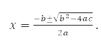
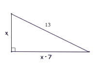
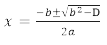
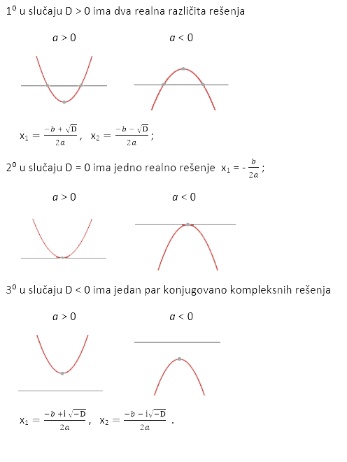
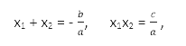
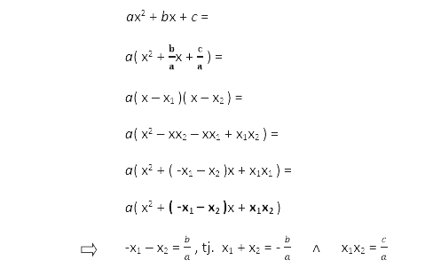

IX gimnazija „Mihailo Petrović Alas“
Bulevar Maršala Tolbuhina 41, Novi Beograd
Maturski rad iz matematike
Tema: Primena kvadratne funkcije
Mentor:
Učenik:
Milena Marić, prof
Ivona Vlašič
Uvod:
Galileo Galilej je jedan od prvih prirodnih naučnika u istoriji, jer je posmatranja i eksperimente organizovao u matematički formalizovane naučne teorije, koje je potom ponovo proveravao eksperimentima i posmatranjima.Nakon završetka školovanja u Firenci i Pizi, postao je 1592. profesor matematike i prirodne filozofije u Padovi, koja je tada pripadala Mletačkoj republici. Oštrog uma i britkog jezika, bio je uvek spreman da dovede u sumnju vladajuće dogme. Što mu je često donosilo koliko pristalica, toliko i neprijatelja. Galilejeva naučna slava, koja sve do danas nije izbledela, vezana je za eksperiment sa slobodnim padom i konstrukcijom teleskopa. Eksperiment sa slobodnim padom izveden je sa čuvenog Krivog tornja u Pizi, kada je Galilej sa vrha bacio dve metalne kugle različitih težina i pokazao da istovremeno padaju na zemlju, odnosno da, suprotno dotadašnjim verovanjima, brzina pri slobodnomm padu ne zavisi od težine tela koje pada. Danas nam je dobro poznato da se taj odonos može izraziti jednakošću s = 0,5gt², gde g predstavlja gravitaciono ubrzanje (približna vrednost g = 9,81m/s²). Zavisnost pređenog puta od vremena se matematički može zapisati kao s(t) = 0,5gt². Dati zapis predstavlja funkciju pređenog puta u zavisnosti od vremena, a kako se ona menja sa kvadratom vremena nazivamo je kvadratnom funkcijom.
Muhamed Horezmi je bio persijski matematičar, astronom i geograf iz IX veka. Malo se zna o njegovom životu. On je uveo modernu numeričku notaciju. Njegova najpoznatija knjiga „Algebra“ se velikim delom bavi računanjem. Međutim, on daje opšti metod (Al Horezmijevo rešenje) za nalaženje dva korena kvadratne jednačine: ax²+bx+c = 0. Pokazao je da su koreni:
1.1. Kvadratna jednačina sa jednom nepoznatom i njeno rešavanje
Kvadratna jednačina je polinomna jednačina drugog stepena. Njen opšti oblik je ax² + bx + c = 0, gde je a≠0 (za a = 0, jednačina postaje linearna). Slova a, b i c se nazivaju koeficijentima: kvadratni koeficijent a je koeficijent uz x², linearni koeficijent b je koeficijent uz x, a c je slobodan član. Koeficijenti a, b i c su elementi skupa realnih ili kompleksnih brojeva. Osnovni zadatak za datu kvadratnu jednačinu jeste određivanje njenog rešenja, tj. korena. Tačnije, rešenje ili koren kvadratne jednačine je neki broj x0 koji kada se zameni na mesto promenljive x u samoj jednačini dobije se da je vrednost leve i desne strane kvadratne jednačine jednaka nuli.
ax² + bx + c = 0
Broj x0 je rešenje kvadratnog trinoma ako je kvadratni trinom ax² + bx + c, deljiv sa x – x0 . Posledica ovog tvrđenja je da se kvadratni trinom ax² + bx + c može napisati u obliku a( x – x1 )( x – x2 ) gde su x1 i x2 rešenja kvadratne jednačine. Kvadratna jednačina se deli na dve vrste:
- Nepotpuna kvadratna jednačina (kada je b = 0 i (ili) c = 0)
- Potpuna kvadratna jednačina (kada je b≠0 i c≠0)
Primer : Hipotenuza pravouglog trougla je 13 cm, a njegove katete se razlikuju za 7 cm. Naći katete tog trougla.
Rešenje:

Ako je x dužina kraće katete, duža kateta je x + 7. Koristeći se Pitagorinom teoremom, dobijamo: x² + ( x + 7 )² = 132, odnosno x² + 7x – 60 = 0. Rešenja ove kvadratne jednačine su x1 = 5, x2 = -12. Pošto dužina x mora biti pozitivan broj, drugo rešenje ne dolazi u obzir. Dakle, tražene katete su 5 cm I 12 cm.
1.2. Diskriminanta
Diskriminanta kvadratne jednačine ax² + bx + c = 0 je izraz D = b² – 4ac . Koristeći se diskriminantom, formulu za nalaženje rešenja kvadratne jednačine možemo zapisati u obliku :
Kvadratna jednačina ax² + bx + c = 0 sa realnim koeficijentima:
Primer : Ispitati prirodu rešenja jednačine mx² + ( 2m + 5 )x + m = 0 .
Rešenje:
D = (2m + 5)² – 4m²
D = 25 + 20m
- za m ˂ - 5/4 ( D ˂ 0 ) rešenja su konjugovano kompleksna;
- za m = - 5/4 ( D = 0 ) rešenja su realna i jednaka
- za m ˃ - 5/4 ( D ˃ 0 ) rešenja su realna i različita
1.3. Vietove formule
Između rešenja x1 i x2 kvadratne jednačine ax² + bx + c = 0, a, b, ∈ R i njenih koeficijenata postoje relacije:
Izvodjenje :
